Treisema RS
Resonance Skills obtained from Lost Ragnarok units of the Treisema Republic faction. Can only be use by Special units and Treisema units.
3100713

Arondight |
 ユニコーンの微睡
ユニコーンの微睡
|
|---|---|
| 自身のHPが150上昇し、デュエル時に毒・麻痺に対して50%の耐性を得る | |
3100723

Arondight |
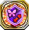 ユニコーンの勇猛 |
| 自身および周囲3マス以内の味方ユニットのHPを20%回復し、2ターンの間、90%の幻惑・行動不可耐性を付与する | |
3400113

Artemis |
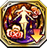 マスターテリオンの権威 |
| 1ターンの間、周囲3マス以内の敵ユニット1体の運を100%下降させる | |
3400123

Artemis |
 マスターテリオンの竜角
マスターテリオンの竜角
|
| クエスト開始から2ターンの間、行動不可耐性を持つ ※この耐性はデュエル時以外の行動不可に対しても効果を発揮する | |
3400613

Azusa Yumi |
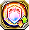 メデューサの硬化 |
| 2ターンの間、自身の守を300上昇し、速を100下降させる。さらに移動力を1にする。 | |
3600413

Caduceus |
 ムニンの識別
ムニンの識別
|
| 自身の魔攻が20上昇する。さらに自軍フェーズ開始時、自身および周囲3マス以内の味方ユニットのHPを最大HPの10%分回復する | |
3303113

Cassius |
 ウロボロスの円環
ウロボロスの円環
|
| 防御時に50%の確率で発動。敵から受けるダメージを50%軽減する。カシウス装備時、相手がハルモニア教皇国ユニットの場合、受けるダメージを70%軽減する | |
3303123

Cassius |
 ウロボロスの回帰
ウロボロスの回帰
|
| 自身の物攻が20上昇する。さらに自軍フェーズ開始時、自身および周囲3マス以内の味方ユニットのHPを最大HPの10%分回復する | |
3303133

Cassius |
 ウロボロスの永続
ウロボロスの永続
|
| 自身および周囲3マス以内の味方ユニットのHPを20%回復し、2ターンの間、90%の毒・麻痺耐性を付与する | |
5303113

Cassius |
 ウロボロスの再生
ウロボロスの再生
|
| カシウス装備時のみ発動。自身のHPが1000、守・精が50、運が20上昇する | |
43031001

Cassius |
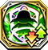 輪廻旺盛・団子之業 |
| ゴッドキラーズが装備した時、速・運が100%下降し、クエスト開始から2ターンの間、物防・魔防が500上昇する | |
3200613

Dagda |
ベヒモスの暴圧 |
| 炎・風・雷・氷属性に与えるダメージが15%増加する。風属性ユニット装備時、HPが100上昇する | |
3302113

Gae Buidhe |
 ハーピーの妖翼
ハーピーの妖翼
|
| 1ターンの間、自身および周囲3マス以内の味方ユニットの命中率を100%にする | |
3300713

Gae Bulg |
 ケルベロスの六眼
ケルベロスの六眼
|
| 自身のHPが200上昇し、物攻・物防・魔防が10上昇する | |
3303213

Gae Dearg |
 イーリスの神託
イーリスの神託
|
| 自身の力が25上昇し、攻撃時、35%の確率で1ターンの間麻痺を付与する | |
43032001

Gae Dearg |
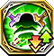 至虹の飽食 |
| 雷属性の槍の飛行ユニットが装備した時、速・運が100%下降し、クエスト開始から1ターンの間、物攻が777上昇する | |
5303413

Grand Epieu |
 バハムートの支界
バハムートの支界
|
| 1ターンの間、選択したユニットに追撃が発生する効果を付与する ※相手が追撃を封じるスキルを所持している場合は追撃が発生しない | |
3501713

Grimoire |
 ニーズヘッグの執着
ニーズヘッグの執着
|
| 自身の魔攻が35上昇し、HPが80%以上の場合、さらに魔攻・魔防が15上昇する | |
3501723

Grimoire |
 ニーズヘッグの業腹
ニーズヘッグの業腹
|
| 1ターンの間、敵軍全ユニットの運を35下降させる | |
5501713

Grimoire |
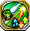 ニーズヘッグの天翔 |
| 風属性ユニットへ与えるダメージが80%増加するが、氷属性ユニットから受けるダメージが30%増加する | |
|
45017002
Grimoire |
ニーズヘッグの執着
|
| 自身の魔攻が35上昇し、HPが80%以上の場合、さらに魔攻・魔防が15上昇する | |
3500113

Keraunos |
 テュポーンの激情
テュポーンの激情
|
| 自身のHPが150上昇し、魔攻・魔防が10上昇する。さらにデュエル時に60%の毒耐性を得る | |
3600513

Kerykeion |
 フギンの明察
フギンの明察
|
| 周囲5マス以内の敵ユニット1体に付与された、コマンドスキルの効果を2ターンの間無効にする | |
3100413

Kusanagi No Tsurugi |
 ヴリトラの抱合
ヴリトラの抱合
|
| 氷属性ユニットへ与えるダメージが80%増加するが、風属性ユニットから受けるダメージが30%増加する | |
3100213

Laevateinn |
 バハムートの大翼
バハムートの大翼
|
| HPを10%消費して発動。周囲7マス以内の敵1体と、その周囲2マス以内にいる敵にHP15%分のダメージを与える※このダメージでは撤退させられない。また、HP10%以下の場合は使用できない | |
3100223

Laevateinn |
 バハムートの羽翼
バハムートの羽翼
|
| 光属性ユニットへ与えるダメージが80%増加するが、光属性ユニットから受けるダメージが30%増加する | |
41002011

Laevateinn |
 理砕『大盛の器』
理砕『大盛の器』
|
| 周囲2マス以内の全ユニットに1ターンの間、行動不可を付与する。また、自身には2ターンの間、行動不可を付与する | |
3300513

Luin |
 ヒュドラーの怨嗟
ヒュドラーの怨嗟
|
| クエスト開始から2ターンの間、忘却・挑発耐性を持つ ※この耐性はデュエル時以外の忘却・挑発に対しても効果を発揮する | |
3100114

Masamune |
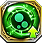 ヨルムンガンドの牙 |
| 自身の力が25上昇し、攻撃時、80%の確率でデュエル相手に1ターンの間毒を付与する | |
3100123

Masamune |
 ヨルムンガンドの蛇眼
ヨルムンガンドの蛇眼
|
| 自身のHPが200上昇する。デュエル時、自身が有利属性の場合、与えるダメージが35%上昇する。さらに隣接する敵ユニットとのデュエル時、物攻が35上昇する | |
3500613

Megiddo |
 バロールの巨躯
バロールの巨躯
|
| クエスト開始から2ターンの間、毒・忘却耐性を持つ ※この耐性はデュエル時以外の毒・忘却に対しても効果を発揮する | |
3600613

Mistilteinn |
ドリュアスの芳香 |
| 自身の魔が25上昇し、攻撃時、35%の確率で1ターンの間麻痺を付与する | |
3200113

Mjolnir |
 キマイラの威喝
キマイラの威喝
|
| 自身の物攻が35上昇し、HPが80%以上の場合、さらに物攻・物防が15上昇する | |
3102513

Muramasa |
 ヤマタノオロチの硬鱗
ヤマタノオロチの硬鱗
|
| 連撃攻撃を受ける時、連撃数が多くなるほどダメージを軽減する ※1撃目は20%、2撃目は30%、3撃目は40%、4撃目は50%、5撃目以降は60%軽減する | |
5102513

Muramasa |
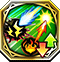 ヤマタノオロチの霊威 |
| 雷属性ユニットへ与えるダメージが80%増加するが、炎属性ユニットから受けるダメージが30%増加する | |
3400213

Pinaka |
 ガルーダの救護
ガルーダの救護
|
| 自身を含む周囲5マス以内の味方ユニット1体の封印を治癒する | |
3201313

Reseph |
 ネルガルの傍若
ネルガルの傍若
|
| クエスト開始から3ターンの間、自身から攻撃を仕掛けたデュエル後、与えたダメージの30%分、自身のHPを回復する | |
3200713

Sharur |
ティアマトの愛護 |
| クエスト開始から3ターン目までの間、自軍フェーズ開始時に、自身のHPが100%回復する | |
3601313

Sistrum |
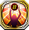 バステトの情愛 |
| 自身を除く周囲3マス以内の味方ユニットの麻痺を治癒する。さらに2ターンの間、デュエル時に100%の麻痺耐性を付与する | |
3502013

Tathlum |
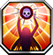 バンシーの叫喚 |
| 隣接する味方ユニット1体の死の宣告を治癒し、周囲3マス以内の味方ユニットに死の宣告に対しての100%の耐性を2ターンの間付与する ※デュエル時以外も耐性を得る | |
3201213

Thrand |
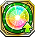 セトの雷鳴 |
| 自軍全ユニットのHPが50、力・魔・守・精が2上昇する ※自軍に同じスキルを装備しているユニットが多いほど、重複して効果が発動する | |
3300213

Trident |
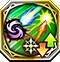 ペガサスの天駆 |
| 闇属性ユニットへ与えるダメージが80%増加するが、光属性ユニットから受けるダメージが30%増加する | |
3500513

Vajra |
 ラクシュミーの溢運
ラクシュミーの溢運
|
| 光・闇属性に与えるダメージが30%増加する。風属性ユニット装備時、HPが100上昇する | |
3301713

Wotan |
 スレイプニルの血統
スレイプニルの血統
|
| 自身を含む周囲3マス以内の味方ユニットの出血・忘却を治癒し、HPを最大HPの20%分回復する | |
3500313

Yata No Kagami |
 ジャバウォックの炯眼
ジャバウォックの炯眼
|
| 自身を除く、味方ユニット1体のコマンドスキルの使用回数を1回分回復する。さらにHP50%分回復する | |
3400513

Yoichi |
 グライアイの一眼
グライアイの一眼
|
| 射程1の攻撃が可能になるが、射程1での攻撃時、自身に追撃が発生しづらくなり、相手に追撃が発生しやすい ※弓ユニット以外が装備した場合は発動しない |